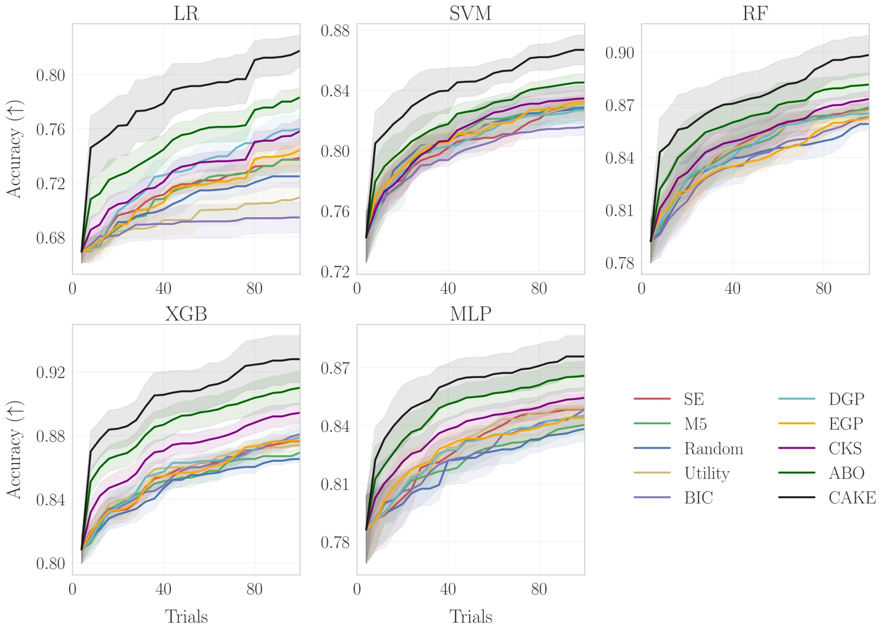
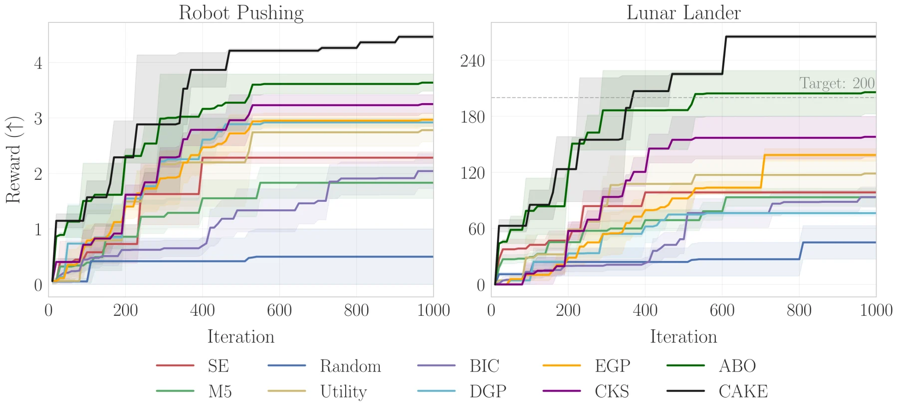
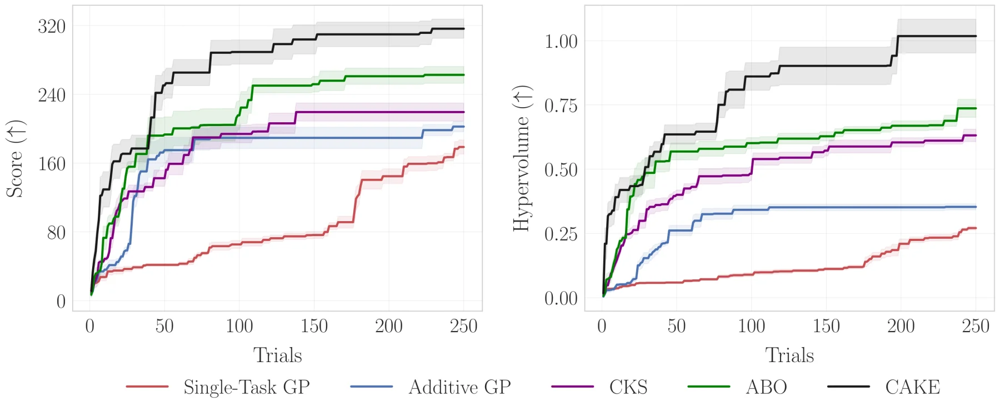
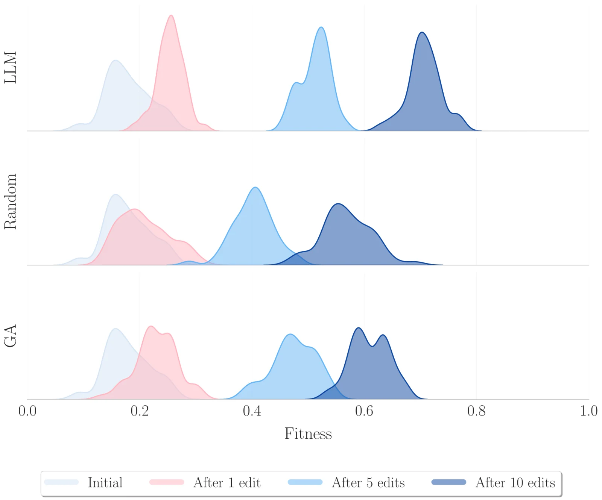

CAKEAdaptive Kernel Design for Bayesian Optimization Is a Piece of CAKE with LLMs
1School of Artificial Intelligence, The Chinese University of Hong Kong, Shenzhen · 2School of Science and Engineering, The Chinese University of Hong Kong, Shenzhen · 3Holonyak Micro & Nanotechnology Lab, University of Illinois at Urbana-Champaign · 4HERON CoE for Robotics and AI-ATHENA R.C., Greece
* Corresponding author
Abstract
The efficiency of Bayesian optimization (BO) depends heavily on the choice of Gaussian process (GP) kernel, which helps balance exploration and exploitation under limited evaluation budgets. Traditional BO methods often use fixed kernels or heuristic selection strategies. When the selected kernel is poorly suited to the underlying objective function, these approaches can converge slowly or produce suboptimal solutions. To address this limitation, we propose Context-Aware Kernel Evolution (CAKE), which enhances BO with large language models (LLMs). CAKE uses LLMs as crossover and mutation operators to adaptively generate and refine GP kernels based on the data observed throughout optimization. We also propose BIC-Acquisition Kernel Ranking (BAKER), which selects the most effective kernel by balancing model fit, measured by the Bayesian information criterion (BIC), with the expected improvement at each BO iteration. Extensive experiments show that CAKE-based BO consistently outperforms established baselines across a range of real-world tasks, including hyperparameter optimization, controller tuning, and photonic chip design.
Context-Aware Kernel Evolution
Before selecting each new Bayesian optimization query, CAKE refines the Gaussian process kernel.
CAKE begins with a small set of randomly sampled observations and a population of six base kernels: squared exponential (SE), periodic (PER), linear (LIN), rational quadratic (RQ), Matérn-3/2 (M3), and Matérn-5/2 (M5). The observations are added to a system prompt as few-shot examples. The prompt asks the LLM to act as a Gaussian process expert, identify patterns in the observed data, and reason about kernel structures that could explain them. This process operates entirely in context and does not fine-tune or update the LLM.
Each candidate is a compositional kernel built through addition and multiplication, both of which preserve kernel validity. Candidate fitness is derived from the Bayesian information criterion (BIC), which balances Gaussian process model fit against complexity. The fitness values are normalized to the interval [0, 1] across tasks.
- Condition on the current observations: at every BO iteration, CAKE updates the prompt with all input–output pairs collected so far.
- Crossover: five times per iteration, two parent kernels are sampled with probability proportional to fitness. The LLM combines them using addition or multiplication and explains the proposed structure.
- Mutation: with probability 0.7, the LLM modifies the fittest kernel by replacing one base component with another. The crossover and mutation candidates are evaluated together with the existing population.
- Survivor selection: CAKE retains the ten kernels with the highest normalized BIC fitness to form the next generation.
- Rank and query: BAKER weights each surviving kernel in proportion to exp(−BIC), multiplies that weight by the normalized expected improvement at the kernel’s proposed query, and selects the highest-scoring kernel–query pair. The objective is evaluated and the new observation is added before the loop repeats.
BAKER is important because the best-fitting kernel does not necessarily propose the most useful next evaluation. Its joint ranking explicitly balances model fit with the potential optimization gain of the candidate query.
Experimental Evaluation
The evaluation spans heterogeneous hyperparameter landscapes, dynamic control environments, and multi-objective physical design.
All experiments use BoTorch, with expected improvement as the default acquisition function and gpt-4o-mini as the LLM. The evaluation compares CAKE with fixed kernels, adaptive kernel selection based on Random, Utility, or BIC criteria, deep and ensemble Gaussian processes, Compositional Kernel Search (CKS), and Automated Bayesian Optimization (ABO). Shaded regions in the plots show the standard error across independent trials.
For hyperparameter optimization, HPOBench provides 60 tasks drawn from 12 OpenML datasets and five model families: logistic regression, support vector machines, random forests, XGBoost, and multilayer perceptrons. Each model and dataset pair is optimized for test accuracy over 100 trials and 20 random seeds. CAKE achieves the highest average test accuracy across all five model families. Its advantage is especially clear early in the optimization process. Averaged across HPOBench, CAKE achieves 67.5% of its eventual improvement within the first quarter of the budget and more than 83% by the halfway point.

Controller Tuning and Photonic Design
The controller experiments evaluate adaptation to changing environments. The robot-pushing task optimizes 14 controller parameters that govern two robotic hands. The lunar-landing task optimizes 12 parameters that map an eight-dimensional state to four actions. Both tasks run for 1,000 iterations, with results averaged over ten initial conditions. CAKE achieves the highest average reward in both tasks and converges fastest in robot pushing. For lunar landing, ABO is the only baseline that also reaches the target reward of 200, although its performance fluctuates more than CAKE across difficult environments. The fixed SE and M5 kernels tend to plateau earlier.

Photonic chip design is formulated as a multi-objective black-box problem with five competing physical indicators: Q-factor, wavelength, lasing area, power, and divergence angle. CAKE is evaluated over 250 trials and ten random initializations using expected hypervolume improvement. The comparison methods are Single-Task GP, Additive GP, CKS, and ABO. CAKE achieves the highest overall score and hypervolume, which indicates a stronger design and broader exploration of the Pareto front. It finds a substantially higher-scoring solution in fewer than 40 trials. The paper reports this result as a tenfold acceleration of the design cycle relative to the baselines.

What Drives the Improvement?
Ablations separate the contribution of LLM-guided kernel evolution from BAKER’s joint model-fit and acquisition ranking.
Across all 60 HPOBench tasks, the complete CAKE + BAKER configuration obtains the best average rank, 1.04. Selecting CAKE kernels with acquisition utility alone ranks second at 2.40, while a conventional genetic algorithm reaches 2.70 and CAKE with BIC alone reaches 3.02. CKS + BAKER, Adaptive + BAKER, and random recombination rank 3.12, 4.60, and 6.80, respectively. Removing either the LLM-guided evolution or BAKER therefore degrades performance.
| Configuration | Average rank ↓ |
|---|---|
| CAKE + BAKER | 1.04 |
| CAKE + Utility | 2.40 |
| Genetic Algorithm | 2.70 |
| CAKE + BIC | 3.02 |
| CKS + BAKER | 3.12 |
| Adaptive + BAKER | 4.60 |
| Random Sampling | 6.80 |
The population analysis helps explain this improvement. After one LLM edit, consisting of one crossover and mutation round, the fitness distribution already shifts toward stronger kernels. After five and ten edits, the mean fitness continues to rise while the variance narrows. Random recombination and traditional genetic operators converge more slowly and retain broader distributions with lower fitness.

Citation
@article{suwandi2025cake,
title={Adaptive Kernel Design for Bayesian Optimization Is a Piece of CAKE with LLMs},
author={Richard Cornelius Suwandi and Feng Yin and Juntao Wang and Renjie Li and Tsung-Hui Chang and Sergios Theodoridis},
journal={arXiv preprint arXiv:2509.17998},
year={2025}
}